소방설비기사(기계분야) (2017-05-07 기출문제)
1과목: 소방원론
1. 다음 중 열전도율이 가장 작은 것은?
- 알루미늄
- 철재
- 은
- 암면(광물섬유)
(정답률: 74%)

2. 공기와 할론 1301의 혼합기체에서 할론 1301에 비해 공기의 확산속도는 약 몇 배인가? (단, 공기의 평균분자량은 29, 헐론 1301의 분자량은 149이다.)
- 2.27배
- 3.85배
- 5.17배
- 6.46배
(정답률: 50%)
3. 건물화재의 표준시간-온도곡선에서 화재발생 후 1시간이 경과할 경우 내부 온도는 약 몇 ℃ 정도 되는가?
- 225
- 625
- 840
- 925
(정답률: 60%)
4. 건축물의 피난동선에 대한 설명으로 틀린 것은?
- 피난동선은 가급적 단순한 형태가 좋다.
- 피난동선은 가급적 상호 반대방향으로 다수의 출구와 연결되는 것이 좋다.
- 피난동선은 수평동선과 수직동선으로 구분된다.
- 피난동선은 복도, 계단을 제외한 엘리베이터와 같은 피난전용의 통행구조를 말한다.
(정답률: 76%)
5. 질식소화 시 공기 중의 산소농도는 일반적으로 약 몇 vol% 이하로 하여야 하는가?
- 25
- 21
- 19
- 15
(정답률: 72%)
6. 내화구조의 기준 중 벽의 경우 벽돌조로서 두께가 최소 몇 cm 이상이어야 하는가?
- 5
- 10
- 12
- 19
(정답률: 56%)
7. 다음 원소 중 수소와의 결합력이 가장 큰 것은?
- F
- Cl
- Br
- I
(정답률: 65%)
8. 다음 중 연소 시 아황산가스를 발생시키는 것은?
- 적린
- 유황
- 트리에틸알루미늄
- 황린
(정답률: 65%)
9. 화재를 소화하는 방법 중 물리적 방법에 의한 소화가 아닌 것은?
- 억제소화
- 제거소화
- 질식소화
- 냉각소화
(정답률: 75%)
10. 화재의 소화원리에 따른 소화방법의 적용으로 틀린 것은?
- 냉각소화 : 스프링클러설비
- 질식소화 : 이산화탄소 소화설비
- 제거소화 : 포소화설비
- 억제소화 : 할로겐화합물 소화설비
(정답률: 77%)
11. 표면온도가 300℃에서 안전하게 작동하도록 설계된 히터의 표면온도가 360℃로 상승하면 300℃에 비하여 약 몇 배의 열을 방출할 수 있는가?
- 1.1배
- 1.5배
- 2.0배
- 2.5배
(정답률: 55%)
12. 프로판 50vol.%,부탄 40vol.%,프로필렌 10vol.%로 된 혼합가스의 폭발하한계는 약 vol.%인가? (단, 각 가스의 폭발하한계는 프로판은 2.2vol.%, 부탄은 1.9vol.% 프로필렌은 2.4vol.%이다.)
- 0.83
- 2.09
- 5.⑤
- 9.44
(정답률: 62%)
13. 동식물유류에서 “요오드값이 크다.” 라는 의미를 옳게 설명한 것은?
- 불포화도가 높다.
- 불건성유이다.
- 자연발화성이 낮다.
- 산소와의 결합이 어렵다.
(정답률: 73%)
14. 탄화칼슘이 물과 반응 할 때 발생되는 기체는?
- 일산화탄소
- 아세틸렌
- 황화수소
- 수소
(정답률: 70%)
15. 에테르, 케톤. 에스테르, 알데히드, 카르복실산. 아민 등과 같은 가연성인 수용성 용매에 유효한포 소화약제는?
- 단백포
- 수성막포
- 불화단백포
- 내알콜포
(정답률: 59%)
16. 화재 시 이산화탄소를 사용하여 화재를 진압 하려고 할 때 산소의 농도를 13vol%로 낮추어 화재를 진압하려면 공기 중 이산화탄소의 농도는 약 몇 vol%가 되어야 하는가?
- 18.1
- 28.1
- 38.1
- 48.1
(정답률: 69%)
17. 유류탱크에 화재 시 발생하는 슬롭오버(Slop over)현상에 관한 설명으로 틀린 것은?
- 소화 시 외부에서 방사하는 포에 의해 발생한다.
- 연소유가 비산되어 탱크 외부까지 화재가 확산된다.
- 탱크의 바닥에 고인 물의 비등 팽창에 의해 발생한다.
- 연소면의 온도가 100℃ 이상일 때 물을 주수하면 발생된다.
(정답률: 63%)
18. 가연물이 연소가 잘 되기 위한 구비조건으로 틀린 것은?
- 열전도율이 클 것
- 산소와 화학적으로 친화력이 클 것
- 표면적이 클 것
- 활성화에너지가 작을 것
(정답률: 72%)
19. 주성분이 인산염류인 제3종 분말소화약제가 다른 분말소화약제와 다르게 A급 화재에 적용할 수 있는 이유는?
- 열분해 생성물인 CO2가 열을 흡수하므로 냉각에 의하여 소화된다.
- 열분해 생성물인 수증기가 산소를 차단하여 탈수작용 한다.
- 열분해 생성물인 메타인산(HPO3)이 산소의 차단 역할을 하므로 소화가 된다.
- 열분해 생성물인 암모니아가 부촉매 작용을 하므로 소화가 된다.
(정답률: 68%)
20. 위험물의 유별 성질이 자연발화성 및 금수성 물질은 제 몇 류 위험물인가?
- 제1류 위험물
- 제2류 위험물
- 제3류 위험물
- 제4류 위험류
(정답률: 73%)
2과목: 소방유체역학
21. 그림과 같은 삼각형 모양의 평판이 수직으로 유체 내에 놓여 있을 때 압력에 의한 힘의 작용점은 자유표면에서 얼마나 떨어져 있는가? (단, 삼각형의 도심에서 단면 2차모멘트는 bh3/36이다.)
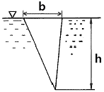
- h/4
- h/3
- h/2
- 2h/3
(정답률: 49%)
22. 압력의 변화가 없을 경우 0℃의 이상기체는 약 몇 ℃가 되면 부피가 2배로 되는가?
- 273℃
- 373℃
- 546℃
- 646℃
(정답률: 57%)
23. 서로 다른 재질로 만든 평관의 양쪽 온도가 다음과 같을 때, 동일한 면적 및 두께를 통한 열류량이 모두 동일하다면, 어느 것이 단열계로서 성능이 가장 우수한가?
- 30C℃ ~ 10℃
- 10℃ ~ -10℃
- 20℃ ~ 10℃
- 40℃ ~ 10℃
(정답률: 58%)
24. 지름 40㎝인 소방용 배관에 물이 80kg/s로 흐르고 있다면 물의 유속은 약 몇 m/s인가?(오류 신고가 접수된 문제입니다. 반드시 정답과 해설을 확인하시기 바랍니다.)
- 6.4
- 0.64
- 12.7
- 1.27
(정답률: 58%)
25. 동력 (power)의 차원을 옳게 표시 한 것은? (단, M : 질량, L : 길이, T : 시간을 나타낸다.)
- ML2T-3
- L2T-1
- ML-1T-1
- MLT-2
(정답률: 56%)
26. 계기압력(gauge pressure) 이 50kPa인 파이프 속의 압력은 진공압력(vacuum pressure) 이 30kPa인 용기 속의 압력보다 얼마나 높은가?
- 0kPa (동일하다.)
- 20kPa
- 80kPa
- 130kPa
(정답률: 60%)
27. 그림에서 두 피스톤의 지름이 각각 30㎝와 5㎝이다. 큰 피스톤이 1㎝ 아래로 움직이면 작은 피스톤은 위로 몇 ㎝ 움직이는가?
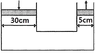
- 1㎝
- 5㎝
- 30㎝
- 36㎝
(정답률: 60%)
28. 직사각형 단면의 덕트에서 가로와 세로가 각각 a 및 1.5a이고, 길이가 L이며, 이 안에서 공기가 V의 평균속도로 흐르고 있다. 이때 손실수두를 구하는 식 으로 옳은 것은? (단, f는 이 수력지름에 기초한 마찰계수이고, g는 중력가속도를 의미 한다.)
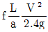
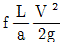
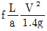
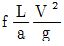
(정답률: 52%)
29. 65%의 효율을 가진 원심펌프를 통하여 물을 1m3/s의 유량으로 송출시 필요한 펌프수두가 6m이다. 이때 펌프에 필요한 축동력은 약 몇 kW인가?
- 40kW
- 60kW
- 80kW
- 90kW
(정답률: 61%)
30. 중력가속도가 2m/s2인 곳에서 무게가 8kN이고 부피가 5m3인 물체의 비중은 약 얼마인가?
- 0.2
- 0.8
- 1.0
- 1.6
(정답률: 51%)
31. 관 내 물의 속도가 12m/s, 압력이 103kPa이다. 속도수두(Hv)와 압력수두(Hp)는 각각 약 몇 m인가?
- Hv = 7.35, Hp = 9.8
- Hv = 7.35, Hp = 10.5
- Hv = 6.52, Hp = 9.8
- Hv = 6.52, Hp = 10.5
(정답률: 62%)
32. 그림과 같이 물탱크에서 2m2의 단면적을 가진 파이프를 통해 터빈으로 물이 공급되고 있다. 송출되는 터빈은 수면으로부터 30m 아래에 위치하고, 유량은 10m3/s이고 터빈 효율이 80%일 때 터빈 출력은 약 몇 kW인가? (단, 밴드나 밸브 등에 의한 부차적 손실계수는 2로 가정한다.)
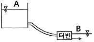
- 1254
- 2690
- 2152
- 3363
(정답률: 30%)
33. 노즐에서 분사되는 물의 속도가 12m/s이고, 분류에 수직인 평판은 속도 u=4m/s로 움직일 때, 평판이 받는 힘은 약 몇 N인가? (단, 노즐(분류)의 단면적은 0.01m2이다.)
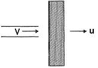
- 640
- 960
- 1280
- 1440
(정답률: 41%)
34. 가역 단열 과정 에서 엔트로피 변화 AS는?
- ∆S > 1
- 0 < ∆S < 1
- ∆S = 1
- ∆S = 0
(정답률: 57%)
35. 온도가 37.5℃인 원유가 0.3m3/ s의 유량으로 원관에 흐르고 있다. 레이놀즈수가 2100일 때, 관의 지름은 약 몇 m인가? (단, 원유의 동점성계수는 6x10-5m2/s이다.)
- 1.25
- 2.45
- 3.03
- 4.45
(정답률: 49%)
36. 안지름 300㎜, 길이 200m인 수평 원관을 통해 유량 0.2m3/s의 물이 흐르고 있다. 관의 양 끝단에서 의 압력 차이가 500mmHg이면 관의 마찰계수는 약 얼마인가? (단, 수은의 비중은 13.6이다.)
- 0.017
- 0.025
- 0.038
- 0.041
(정답률: 47%)
37. 뉴튼(Newton)의 점성법칙을 이용한 회전원통식 점도계는?
- 세이볼트 점도계
- 오스트발트 점도계
- 레드우드 점도계
- 스토머 점도계
(정답률: 62%)
38. 분당 토출량이 1600L, 전양정이100m인 물 펌프의 회전수를 1000rpm에서 1400rpm으로 증가하면 전동기 소요동력은 약 몇 kW가 되어야 하는가? (단, 펌프의 효율은 65%이고, 전달계수는 1.1이다.)
- 441
- 82.1
- 121
- 142
(정답률: 44%)
39. 펌프의 공동현상(cavitation)을 방지하기 위한 방법이 아닌 것은?
- 펌프의 설치 위치를 되도록 낮게 하여 흡입 양정을 짧게 한다.
- 단흡입펌프보다는 양흡입펌프를 사용한다.
- 펌프의 흡입 관경을 크게 한다.
- 펌프의 회 전수를 크게 한다.
(정답률: 62%)
40. 체적 2000L의 용기 내에서 압력 0.4MPa, 온도 55℃의 혼합기체의 체적비가 각각 메탄(CH4) 35%, 수소(H2) 40%, 질소(N2) 25%이다. 이 혼합 기체의 질량은 약 몇 kg인가? (단, 일반기체상수는 8.314kJ/(kmol.K)이다.)
- 3.11
- 3.53
- 3.93
- 4.52
(정답률: 43%)
3과목: 소방관계법규
41. 소방기본법상 소방대장의 권한이 아닌 것은?
- 화재가 발생하였을 때에는 화재의 원인 및 피해 등에 대한 조사
- 화재, 재난·재해 그 밖의 위급한 상황이 발생한 현장에 소방활동구역을 정하여 소방활동에 필요한 사람으로서 대통령령으로 정하는 사람 외에는 그 구역에 출입하는 것을 제한
- 사람을 구출하거나 불이 번지는 것을 막기 위하여 필요할 때에는 화재가 발생하거나 불이 번질 우려가 있는 소방대상물 및 토지를 일시적으로 사용하거나 그 사용의 제한 또는 소방활동에 필요한 처분
- 화재 진압 등 소방활동을 위하여 필요할 때에는 소방용수 외에 댐·저수지 또는 수영장 등의 물을 사용하거나 수도의 개폐장치 등을 조작
(정답률: 60%)
42. 위험물안전관리법상 위험물시설의 변경 기준 중 다음 ( ) 안에 알맞은 것은?(관련 규정 개정전 문제로 기존 정답은 2번이며 여기서는 2번을 누르면 정답 처리됩니다. 자세한 내용은 해설을 참고하세요.)
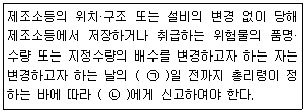
- ㉠ 1, ㉡ 소방본부장 또는 소방서장
- ㉠ 1, ㉡ 시·도지사
- ㉠ 7, ㉡ 소방본부장 또는 소방서장
- ㉠ 7, ㉡ 시·도지사
(정답률: 63%)
43. 화재예방, 소방시설 설치·유지 및 안전관리에 관한 법령상 자동화재탐지설비를 설치하여야 하는 특정소방대상물의 기준으로 틀린 것은?
- 문화 및 집회시설로서 연면적이 1000m2 이상인 것
- 지하가 (터널은 제외)로서 연면적이 1000m2 이상인 것
- 의료시설(정신의료기관 또는 요양병원은 제외)로서 연면적 1000m2 이상인것
- 지하가 중 터널로서 길이가 1000m 이상인 것
(정답률: 40%)
44. 위험물안전관리법령상 제조소등의 완공검사 신청 시기 기준으로 틀린 것은?
- 지하탱크가 있는 제조소등의 경우에는 당해 지하탱크를 매설하기 전
- 이동탱크저장소의 경우에는 이동저장탱크를 완공하고 상치장소를 확보한 후
- 이송취급소의 경우에는 이송배관 공사의 전체 또는 일부 완료한 후
- 배관을 지하에 설치하는 경우에는 소방서장이 지정하는 부분을 매몰하고 난 직후
(정답률: 58%)
45. 위험물안전관리법령상 제조소 또는 일반 취급소에서 취급하는 제 4류 위험물의 최대 수량의 합이 지정수량의 24만 배 이상 48만 배 미만인 사업소의 관계인이 두어야 하는 화학소방자동차와 자체소방대원의 수의 기준으로 옳은 것은? (단, 화재 그 밖의 재난발생시 다른 사업소 등과 상호응원에 관한 협정을 체결하고 있는 사업소는 제외한다.)
- 화학소방자동차 : 2대, 자체소방대원의 수 : 10인
- 화학소방자동차 : 3대, 자제소방대원의 수 : 10인
- 화학소방자동차 : 3대, 자제소방대원의 수 : 15인
- 화학소방자동차 : 4대, 자제소방대원의 수 : 20인
(정답률: 57%)
46. 방시설공사업법령상 하자를 보수하여야 하는 소방시설과 소방시설별 하자보수 보증기간으로 옳은 것은?
- 유도등 : 1년
- 자동소화장치 : 3년
- 자동화재탐지설비 : 2년
- 상수도소화용수설비 : 2년
(정답률: 58%)
47. 화재예방, 소방시설 설치·유지 및 안전관리에 관한 법상 시·도지사는 관리업자에게 영업정지를 명하는 경우로서 그 영업정지가 국민에게 심한 불편을 주거나 그 밖에 공익을 해칠 우려가 있을 때에는 영업정지처분을 갈음하여 얼마 이하의 과징금을 부과할 수 있는가?
- 1000만원
- 2000만원
- 3000만원
- 5000만원
(정답률: 59%)
48. 소방기본법령상 불꽃을 사용하는 용접·용단 기구의 용접 또는 용단 작업장에서 지켜야 하는 사항 중 다음 ( )안에 알맞은 것은?
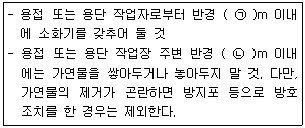
- ㉠ 3, ㉡ 5
- ㉠ 5, ㉡ 3
- ㉠ 5, ㉡ 10
- ㉠ 10, ㉡ 5
(정답률: 65%)
49. 화재예방, 소방시설 설치·유지 및 안전관리에 관한 법상 특정소방대상물의 관계인이 소방시설에 폐쇄(잠금을 포함)·차단 등의 행위를 하여서 사람을 상해에 이르게 한 때에 대한 벌칙기준으로 옳은 것은?
- 10년 이하의 징역 또는 1억 원 이하의 벌금
- 7년 이하의 징역 또는 7000만 원 이하의 벌금
- 5년 이하의 징역 또는 5000만 원 이하의 벌금
- 3년 이하의 징역 또는 3000만 원 이하의 벌금
(정답률: 57%)
50. 소방기본법상 관계인의 소방활동을 위반하여 정당한 사유 없이 소방대가 현장에 도착할 때까지 사람을 구출하는 조치 또는 불을 끄거나 불이 번지지 아니하도록 하는 조치를 하지 아니한 자에 대한 벌칙 기준으로 옳은 것은?
- 100만 원 이하의 벌금
- 200만 원 이하의 벌금
- 300만 원 이하의 벌금
- 400만 원 이하의 벌금
(정답률: 43%)
51. 화재위험도가 낮은 특정소방대상물 중 소방대가 조직되어 24시간 근무하고 있는 청사 및 차고에 설치하지 아니할 수 있는 소방시설이 아닌 것은?
- 자동화재탐지설비
- 연결송수관설비
- 피난기구
- 비상방송설비
(정답률: 53%)
52. 제조소등의 위치·구조 및 설비의 기준 중 위험물을 취급하는 건축물의 환기설비 설치 기준으로 다음 ( )안에 알맞은 것은?
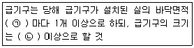
- ㉠ 100 m2, ㉡ 800 cm2
- ㉠ 150 m2, ㉡ 800 cm2
- ㉠ 100 m2, ㉡ 1000 cm2
- ㉠ 150 m2, ㉡1000 cm2
(정답률: 52%)
53. 소방시설공사업법령상 특정소방대상물에 설치된 소방시설등을 구성하는 것의 전부 또는 일부를 개설, 이전 또는 정비하는 공사의 경우 소방시설공사의 착공신고 대상이 아닌 것은? (단, 고장 또는 파손 등으로 인하여 작동시킬 수 없는 소방시설을 긴급히 교체하거나 보수하여야 하는 경우는 제외한다.)
- 수신반
- 소화펌프
- 동력(감시)제어반
- 압력챔버
(정답률: 61%)
54. 특정소방대상물에서 사용하는 방염대상물품의 방염성능검사 방법과 검사 결과에 따른 합격 표시 등에 필요한 사항은 무엇으로 정하는가?(관련규정 개정전 문제로 여기서는 기존 정답인 2번을 누르면 정답 처리 됩니다. 자세한 내용은 해설을 참고하세요)
- 대통령령
- 총리령
- 국민안전처장관령
- 시·도의 조례
(정답률: 58%)
55. 시장지역에서 화재로 오인할 만한 우려가 있는 불을 피우거나 연막소독을 하려는 자가 신고를 하지 아니하여 소방자동차를 출동하게 한 자에 대한 과태료 부과·징수권자는?
- 국무총리
- 국민안전처장관
- 시·도지사
- 소방서장
(정답률: 58%)
56. 소방기본법령상 소방용수시설에 대한 설명으로 틀린 것은?
- 시·도지사는 소방활동에 필요한 소방용수 시설을 설치하고 유지·관리하여야 한다.
- 수도법의 규정에 따라 설치된 소화전도 시·도지사가 유지·관리하여야 한다.
- 소방본부장 또는 소방서장은 원활한 소방활동을 위하여 소방용수시설에 대한 조사를 월 1회 이상 실시하여야 한다.
- 소방용수시설 조사의 결과는 2년간 보관하여야 한다.
(정답률: 65%)
57. 소방기본법령상 소방서 종합상황실의 실장이 서면·모사전송 또는 컴퓨터통신 등으로 소방본부의 종합상황실에 지체 없이 보고하여야 하는 기준으로 틀린 것은?
- 사망자가 5인 이상 발생하거나 사상자가 10인 이상 발생한 화재
- 층수가 11층 이상인 건축물에서 발생한 화재
- 이재민이 50인 이상 발생한 화재
- 재산피해액이 50억 원 발생한 화재
(정답률: 54%)
58. 화재예방, 소방시설 설치·유지 및 안전관리에 관한 법령상 시·도지사가 실시하는 방염성능 검사 대상으로 옳은 것은?
- 설치 현장에서 방염처리를 하는 합판·목재
- 제조 또는 가공 공정에서 방염처리를 한 카펫
- 제조 또는 가공 공정에서 방염처리를 한 창문에 설치하는 블라인드
- 설치 현장에서 방염처리를 하는 암막·무대막
(정답률: 53%)
59. 화재예방, 소방시설 설치·유지 및 안전관리에 관한 법령상 건축허가 등의 동의를 요구하는 때 동의요구서에 첨부하여야 하는 설계도서가 아닌 것은? (단, 소방시설공사 착공신고대상에 해당하는 경우이다.)
- 창호도
- 실내 전개도
- 건축물의 단면도
- 건축물의 주단면 상세도(내장 재료를 명시한 것)
(정답률: 52%)
60. 지하층을 포함한 층수가 16층 이상 40층 미만인 특정소방대상물의 소방시설 공사현장에 배치하여야 할 소방공사 책임감리원의 배치기준으로 옳은 것은?
- 총리령으로 정하는 특급감리원 중 소방기술사
- 총리령으로 정하는 특급감리원 이상의 소방공사 감리원(기계분야 및 전기분야)
- 총리령으로 정하는 고급감리원 이상의 소방공사 감리원(기계분야 및 전기분야)
- 총리령으로 정허는 중급감리원 이상의 소방공사 감리원(기계분야 및 전기분야)
(정답률: 47%)
4과목: 소방기계시설의 구조 및 원리
61. 소방설비용헤드의 분류 중 수류를 살수판에 충돌하여 미세한 물방울을 만드는 물분무 헤드는?
- 디프렉타형
- 충돌형
- 슬리트형
- 분사형
(정답률: 71%)
62. 물분무소화설비의 가압송수장치의 설치기준 중 틀린 것은? (단, 전동기 또는 내연기관에 따른 펌프를 이용하는 가압송수장치이다.)
- 기동용수압개폐장치를 기동장치로 사용할 경우에 설치하는 충압펌프의 토출압력은 가압송수장치의 정격 토출압력과 같게 한다.
- 가압송수장치가 기동된 경우에는 자동으로 정지되도록 한다.
- 기동용수압개폐장치(압력챔버)를 사용할 경우 그 용적은 100L 이상으로 한다.
- 수원의 수위가 펌프보다 낮은 위치에 있는 가압송수장치에는 물올림 장치를 설치한다.
(정답률: 60%)
63. 건축물의 층수가 40층인 특별피난계단의 계단실 및 부속실 제연설비의 비상전원은 몇 분 이상 유효하게 작동할 수 있어야 하는가?
- 20
- 30
- 40
- 60
(정답률: 62%)
64. 옥내소화전설비 배관의 설치기준 중 다음 ( ) 안에 알맞은 것은?
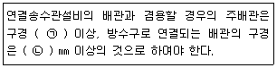
- ㉠ 80, ㉡ 65
- ㉠ 80, ㉡ 50
- ㉠ 100, ㉡ 65
- ㉠ 125, ㉡ 65
(정답률: 79%)
65. 포소화설비의 자동식 기동장치의 설치기준 중 다음 ( ) 안에 알맞은 것은? (단, 화재감지기를 사용하는 경우이며, 자동화재탐지설비의 수신기가 설치된 장소에 상시 사람이 근무하고 있고, 화재 시 즉시 해당 조작부를 작동시킬 수 있는 경우는 제외한다.)
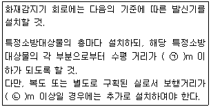
- ㉠ 25, ㉡ 30
- ㉠ 25, ㉡ 40
- ㉠ 15, ㉡ 30
- ㉠ 15, ㉡ 40
(정답률: 60%)
66. 이산화탄소 소화설비 기동장치의 설치기준으로 옳은 것은?
- 가스압력식 기동장치 기동용가스용기의 용적은 3L 이상으로 한다.
- 전기식 기동장치로서 5병의 저장용기를 동시에 개방하는 설비는 2병 이상의 저장 용기에 전자개방밸브를 부착해야 한다.
- 수동식 기동장치는 전역방출방식에 있어서 방호대상물마다 설치한다.
- 수동식 기동장치의 부근에는 방출지연을 위한 비상스위치를 설치해야 한다.
(정답률: 61%)
67. 연결살수설비의 배관에 관한 설치기준 중 옳은 것은?
- 개방형헤드를 사용하는 연결살수설비의 수평주행배관은 헤드를 향하여 상향으로 100분의 5 이상의 기울기로 설치한다.
- 가지배관 또는 교차배관을 설치하는 경우에는 가지배관의 배열은 토너멘트 방식이어야 한다.
- 교차배관에는 가지배관과 가지배관사이마다 1개 이상의 행가를 설치하되, 가지배관 사이의 거리가 4.5m를 초과하는 경우에는 4.5m 이내마다 1개 이상 설치한다.
- 가지배관은 교차배관 또는 주배관에서 분기되는 지점을 기점으로 한 쪽 가지배관에 설치되는 헤드의 개수는 6개 이하로 하여야 한다.
(정답률: 66%)
68. 스프링클러설비의 교차배관에서 분기되는 지점을 기점으로 한쪽 가지배관에 설치되는 헤드의 개수는 최대 몇 개 이하인가? (단, 방호구역 안에서 칸막이 등으로 구획하여 헤드를 증설하는 경우와 격자형 배관방식을 채택하는 경우는 제외한다.)
- 8
- 10
- 12
- 15
(정답률: 73%)
69. 차고·주차장에 설치하는 포소화전설비의 설치기준 중 다음 ( ) 안에 알맞은 것은? (단, 1개 층의 바닥면적이 200m2 이하인 경우는 제외한다.)
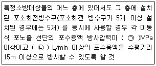
- ㉠ 0.25, ㉡ 230
- ㉠ 0.25, ㉡ 300
- ㉠ 0.35, ㉡ 230
- ㉠ 0.35, ㉡ 300
(정답률: 46%)
70. 물분무소화설비 송수구의 설치기준 중 틀린 것은?
- 구경 65㎜ 의 쌍구형으로 할 것
- 지면으로부터 높이가 0.5m 이상 1m 이하의 위치에 설치할 것
- 가연성가스의 저장·취급시설에 설치하는 송수구는 그 방호대상물로부터 20m 이상의 거리를 두거나 방호대상물에 면하는 부분이 높이 1.5m 이상, 폭 2.5m 이상의 철근콘크리트 벽으로 가려진 장소에 설치할 것
- 송수구는 하나의 층의 바닥면적이 1500m2를 넘을 때마다 1개(5개를 넘을 경우에는 5개로 한다.) 이상을 설치할 것
(정답률: 53%)
71. 분말소화약제 저장용기의 설치기준으로 틀린 것은?
- 설치장소의 온도가 40°C 이하이고, 온도변화가 적은 곳에 설치할 것
- 용기간의 간격은 점검에 지장이 없도록 5㎝ 이상의 간격을 유지할 것
- 저장용기의 충전비는 0.8 이상으로 할 것
- 저장용기에는 가압식은 최고사용압력의 1.8배 이하, 축압식은 용기의 내압시험압력의 0.8배 이하의 압력에서 작동하는 안전밸브를 설치 할 것
(정답률: 65%)
72. 국소방출방식의 분말소화설비 분사해드는 기준저장량의 소화약제를 몇 초 이내에 방사할 수 있는 것이어야 하는가?
- 60
- 30
- 20
- 10
(정답률: 53%)
73. 축압식 분말소화기 지 시 압력계의 정상 사용압력 범위 중 상한 값은?
- 0.68MPa
- 0.78MPa
- 0.88MPa
- 0.98MPa
(정답률: 60%)
74. 노유자시설의 3층에 적응성을 가진 피난기구가 아닌 것은?
- 미끄럼대
- 피난교
- 구조대
- 간이완강기
(정답률: 36%)
75. 연소할 우려가 있는 개구부에 드렌처설비를 설치한 경우 해당 개구부에 한하여 스프링클러 헤드를 설치하지 아니할 수 있는 기준으로 틀린 것은?
- 드렌처헤드는 개구부 위 측에 2.5m 이내마다 1개를 설치할 것
- 제어밸브는 특정소방대상물 층마다에 바닥면으로 부터 0.5 m 이상 1.5m 이하의 위치에 설치할 것
- 드렌처헤드가 가장 많이 설치된 제어밸브에 설치된 드렌처헤드를 동시에 사용하는 경우에 각 헤드선단의 방수량은 80L/min 이상이 되도록 할 것
- 드렌처헤드가 가장 많이 설치된 제어밸브에 설치된 드렌처헤드를 동시에 사용하는 경우에 각 헤드선단의 방수압력은 0.1MPa 이상이 되도록 할 것
(정답률: 58%)
76. 연소방지설비 방수헤드의 설치기준으로 옳은 것은?
- 방수헤드 간의 수평거리는 연소방지설비 전용헤드의 경우에는 1.5m 이하로 할 것
- 방수헤드간의 수평거리는 스프링클러헤드의 경우에는 2m 이하로 할 것
- 살수구역은 환기구 등을 기준으로 지하구의 길이방향으로 350m 이내마다 1개 이상 설치할 것
- 하나의 살수구역의 길이는 2m 이상으로 할 것
(정답률: 59%)
77. 내림식사다리의 구조기준 중 다음 ( ) 안에 공통으로 들어갈 내용은?
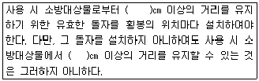
- 15
- 10
- 7
- 5
(정답률: 59%)
78. 청정소화약제 소화설비 중 약제의 저장 용기 내에서 저장상태가 기체상태의 압축가스인 소화약제는?
- IG 541
- HCFC BLEND A
- HFC~227ea
- HFC-23
(정답률: 69%)
79. 연결송수관설비의 가압송수장치의 설치기준으로 틀린 것은? (단, 지표면에서 최상층 방수구의 높이가 70m 이상의 특정소방대상물이다.)
- 펌프의 양정은 최상층에 설치된 노즐선단의 압력이 0.35MPa 이상의 압력이 되도록 할 것
- 계단식 아파트의 경우 펌프의 토출량은 1200L/min 이상이 되는 것으로 할 것
- 계단식 아파트의 경우 해당 층에 설치된 방수구가 3개를 초과하는 것은 1개마다 400L/min을 가산한 양이 펌프의 토출량이 되는 것으로 할 것
- 내연기관을 사용하는 경우(층수가 30층 이상 49층 이하) 내연기관의 연료량은 20분 이상 운전할 수 있는 용량일 것
(정답률: 57%)
80. 소화수조 및 저수조의 가압송수장치 설치기준 중 다음 ( ) 안에 알맞은 것은?
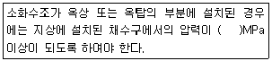
- 0.1
- 0.15
- 0.17
- 0.25
(정답률: 64%)